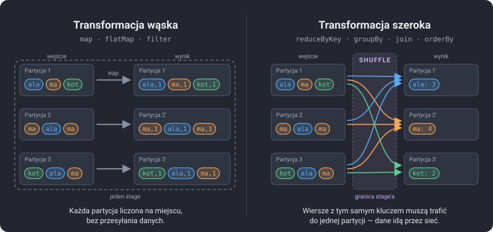

Zajęcia 2#
Obliczenia rozproszone: od MapReduce do Sparka#
Tydzień temu doszliśmy do granicy jednego komputera. Dziś przechodzimy na drugą stronę: co zrobić, gdy dane trzeba podzielić między wiele maszyn i jak połączyć wyniki ich pracy w jedną odpowiedź. Zaczniemy od pomysłu, który w 2004 roku opisał Google — MapReduce — i dojdziemy do Apache Spark, który jest dziś standardem przetwarzania dużych danych. Sparka będziemy używać przez resztę semestru, więc dziś poznajemy jego fundamenty.
Po dzisiejszych zajęciach będziesz w stanie:
- wyjaśnić, jak działa model MapReduce i co dzieje się w fazie shuffle,
- opisać architekturę Sparka: driver, executory, joby, stage'e i taski,
- odróżnić transformację od akcji i wyjaśnić, czym jest leniwe wykonanie,
- wskazać transformacje wąskie i szerokie oraz powiedzieć, dlaczego shuffle jest drogi,
- napisać word count w API RDD i w API DataFrame,
- odczytać z planu wykonania, gdzie Spark przesyła dane między partycjami.
Plan na dziś#
| Blok | Czas |
|---|---|
| Po co dzielić pracę między maszyny | 5 min |
| Model MapReduce | 8 min |
| Architektura Sparka | 7 min |
| Transformacje, akcje i leniwe wykonanie | 5 min |
| Transformacje wąskie i szerokie — shuffle | 5 min |
| RDD kontra DataFrame | 5 min |
| Demo: word count w PySparku | 10 min |
| Zadanie 2 | 45 min |
Po co dzielić pracę między maszyny#
Przypomnienie z zeszłego tygodnia: jeden dysk czyta terabajt w kilka minut albo kilka godzin. Sto dysków czyta ten sam terabajt sto razy szybciej, o ile każdy czyta swoją część. Brzmi prosto, ale od razu pojawiają się pytania:
- Jak podzielić dane? Każda maszyna musi wiedzieć, którą część przetwarza.
- Jak połączyć wyniki? Jeśli liczymy słowa, to słowo „pan” występuje na każdej maszynie. Ktoś musi zsumować te częściowe wyniki.
- Co, gdy maszyna padnie? Przy stu maszynach awaria jednej z nich to nie wyjątek, tylko codzienność.
- Gdzie wykonać obliczenia? Przesłanie terabajta przez sieć trwa godzinami. Taniej jest wysłać kod do danych niż dane do kodu.
Ostatni punkt to jedna z najważniejszych zasad przetwarzania rozproszonego: przenoś obliczenia, nie dane (data locality). Program ma kilka kilobajtów, dane — terabajty.
Model MapReduce#
MapReduce to sposób zapisania obliczenia tak, żeby dało się je automatycznie rozłożyć na wiele maszyn. Programista pisze tylko dwie funkcje:
- map — przetwarza jeden rekord i zwraca pary
(klucz, wartość), - reduce — dostaje klucz i wszystkie wartości dla tego klucza, a zwraca wynik.
Całą resztę, czyli podział danych, przesyłanie, sortowanie i obsługę awarii, robi framework.
Word count — „Hello world” przetwarzania danych#
Zadanie: policz, ile razy występuje każde słowo w tekście. Tekst jest podzielony na dwie maszyny:
Maszyna 1 Maszyna 2
"ala ma kota" "ala ma psa"
"kot ma ale"
│ │
▼ MAP ▼ MAP
(ala,1) (ma,1) (kota,1) (ala,1) (ma,1) (psa,1)
(kot,1) (ma,1) (ale,1)
│ │
└──────────────┬──────────────────┘
▼ SHUFFLE — pary z tym samym kluczem
trafiają na tę samą maszynę
┌──────────────┴──────────────────┐
▼ ▼
ala: [1, 1] kot: [1]
ma: [1, 1, 1] kota: [1]
ale: [1] psa: [1]
│ │
▼ REDUCE (suma) ▼ REDUCE (suma)
(ala,2) (ma,3) (ale,1) (kot,1) (kota,1) (psa,1)
Najciekawsza jest środkowa faza, czyli shuffle. Żeby zsumować wszystkie
wystąpienia słowa ma, wszystkie pary (ma, 1) muszą trafić na jedną
maszynę. To oznacza przesłanie danych przez sieć: każda maszyna wysyła
fragmenty swoich wyników do każdej innej. Shuffle jest najdroższą częścią prawie
każdego obliczenia rozproszonego.
Combiner — redukcja przed wysłaniem
Maszyna 1 ma u siebie dwie pary (ma, 1). Zamiast wysyłać obie, może je
najpierw zsumować lokalnie i wysłać jedną parę (ma, 2). To jest
combiner (lokalna, częściowa redukcja). Przy prawdziwych tekstach,
gdzie słowo „się” występuje tysiące razy na każdej maszynie, zmniejsza to
ilość przesyłanych danych o rzędy wielkości. Zobaczymy go za chwilę w planie
Sparka pod nazwą partial_count.
Hadoop i jego ograniczenia#
Google opisał MapReduce w 2004 roku, a w 2006 roku powstał jego otwarty odpowiednik — Apache Hadoop. Składał się z dwóch części:
- HDFS (Hadoop Distributed File System) — system plików, który dzieli pliki na bloki po 128 MB i trzyma każdy blok w trzech kopiach na różnych maszynach,
- MapReduce — silnik obliczeń działający na tych blokach.
Hadoop zmienił branżę, ale miał poważną wadę: każdy krok zapisywał wyniki na dysk. Algorytm złożony z dziesięciu kroków MapReduce dziesięć razy zapisywał i czytał wszystkie dane z dysku. Uczenie maszynowe, które przechodzi po tych samych danych setki razy, było przez to boleśnie wolne. Pisanie wszystkiego w postaci par map i reduce też nie należało do przyjemności.
Apache Spark#
Spark powstał w 2009 roku na Uniwersytecie Kalifornijskim w Berkeley jako odpowiedź na te problemy. Główne pomysły:
- trzymaj dane pośrednie w pamięci, a nie na dysku — dla obliczeń wieloetapowych to przyspieszenie nawet o dwa rzędy wielkości,
- zamiast tylko map i reduce — bogaty zestaw operacji: filtrowanie, łączenie, grupowanie, sortowanie, SQL,
- całe obliczenie jako graf, który Spark sam optymalizuje, zanim cokolwiek wykona.
Z tego samego zespołu wyrosła firma Databricks, na której platformie będziemy pracować od następnych zajęć.
Architektura#
┌──────────────────────────┐
│ DRIVER │
│ Twój program (notatnik) │
│ SparkSession │
│ planuje i rozdziela │
│ pracę │
└────────────┬─────────────┘
│
┌────────────┴─────────────┐
│ CLUSTER MANAGER │
│ (YARN, Kubernetes, ...) │
└────────────┬─────────────┘
┌───────────────────┼───────────────────┐
▼ ▼ ▼
┌────────────────┐ ┌────────────────┐ ┌────────────────┐
│ EXECUTOR 1 │ │ EXECUTOR 2 │ │ EXECUTOR 3 │
│ task task │ │ task task │ │ task task │
│ [partycje] │ │ [partycje] │ │ [partycje] │
└────────────────┘ └────────────────┘ └────────────────┘
- Driver to proces, w którym działa Twój kod. Buduje plan obliczeń, dzieli go na zadania i rozsyła je do executorów. Do drivera wracają też wyniki.
- Executor to proces na maszynie roboczej, który wykonuje zadania na swoich kawałkach danych i trzyma je w pamięci.
- Cluster manager przydziela zasoby, czyli decyduje, ile executorów i na których maszynach dostanie aplikacja.
- Partycja to kawałek danych przetwarzany przez jeden task. Liczba partycji decyduje o tym, ile pracy może iść równolegle.
Spark w Colabie
W Colabie nie mamy klastra. Uruchamiamy Sparka w trybie lokalnym
(local[*]): driver i executor to jeden proces na jednej maszynie, a taski
wykonują się na wątkach, po jednym na rdzeń procesora. Kod jest dokładnie
taki sam jak na klastrze ze stu maszyn — zmienia się tylko adres mastera.
Dzięki temu naukę Sparka można zacząć na laptopie.
Job, stage, task#
| Pojęcie | Co to jest | Kiedy powstaje |
|---|---|---|
| Job | całe obliczenie uruchomione jedną akcją | przy każdym wywołaniu akcji, np. count() |
| Stage | fragment joba, który da się wykonać bez przesyłania danych między partycjami | Spark tnie job na stage'e w miejscach shuffle |
| Task | praca jednego stage'a na jednej partycji | tyle tasków, ile partycji w stage'u |
Word count z rysunku wyżej to jeden job złożony z dwóch stage'ów: przed shufflem (map) i po nim (reduce). Jeśli tekst ma 8 partycji, pierwszy stage ma 8 tasków.
Transformacje, akcje i leniwe wykonanie#
Operacje w Sparku dzielą się na dwa rodzaje:
| Transformacje | Akcje | |
|---|---|---|
| Co robią | opisują nowy zbiór danych na podstawie poprzedniego | zwracają wynik do drivera albo zapisują go na dysk |
| Czy coś liczą | nie — tylko dopisują krok do planu | tak — uruchamiają cały plan |
| RDD | map, flatMap, filter, reduceByKey, distinct |
count, collect, take, takeOrdered, saveAsTextFile |
| DataFrame | select, filter, groupBy, withColumn, orderBy |
count, show, collect, write |
To jest leniwe wykonanie (lazy evaluation): transformacje tylko budują plan, a dopiero akcja go uruchamia. Spark widzi wtedy całe obliczenie naraz i może je zoptymalizować: połączyć kroki, pominąć niepotrzebne kolumny, przestawić filtry.
Zbudowany plan to DAG (directed acyclic graph, skierowany graf acykliczny): węzły to zbiory danych, krawędzie to transformacje. Ten sam DAG służy też do odporności na awarie. Jeśli executor padnie i zniknie jedna partycja, Spark wie, z czego i jak ją policzyć (lineage, czyli rodowód danych), więc liczy tylko ją od nowa, a nie całe zadanie.
Akcja na końcu każdej komórki
Jeśli komórka zawiera same transformacje, wykonuje się natychmiast i nie zwraca żadnego wyniku — bo nic nie zostało policzone. Błąd w lambdzie też się wtedy nie pokaże. Wyskoczy dopiero przy pierwszej akcji, czasem kilka komórek niżej. Szukając błędu, patrz więc nie tylko na komórkę, w której wyskoczył.
Transformacje wąskie i szerokie#
- Wąska (narrow) — każda partycja wyniku zależy od jednej partycji
wejścia. Można ją liczyć na miejscu, bez wymiany danych. Przykłady:
map,flatMap,filter. - Szeroka (wide) — partycja wyniku potrzebuje danych z wielu partycji
wejścia. Wymaga shuffle. Przykłady:
reduceByKey,groupBy,join,orderBy,distinct.

Po lewej map zamienia każde słowo w parę (słowo, 1) w obrębie tej samej
partycji. Po prawej reduceByKey musi zebrać wszystkie wystąpienia słowa w jednym
miejscu: każde „ala” (niebieskie) z trzech partycji wejścia trafia do partycji 1′,
każde „ma” (pomarańczowe) do partycji 2′. Partycja 2 nie ma żadnego „kot”, więc
nic nie wysyła do partycji 3′.
Kilka wąskich transformacji pod rząd Spark łączy w jeden stage i wykonuje jednym przebiegiem po danych (pipelining). Każda szeroka transformacja to granica stage'a: dane trzeba zapisać, posortować według klucza, przesłać i odczytać po drugiej stronie.
Shuffle jest drogi z trzech powodów: zapis na dysk, przesyłanie przez sieć i serializacja danych. Na Databricksie zobaczymy, że optymalizacja zapytań to w dużej mierze unikanie zbędnych shuffli.
reduceByKey zamiast groupByKey
Oba dają możliwość zsumowania wartości dla klucza, ale groupByKey przesyła
przez sieć każdą pojedynczą parę (słowo, 1), a reduceByKey najpierw
sumuje lokalnie (combiner!) i wysyła tylko sumy częściowe. Przy dużych
danych różnica jest dramatyczna.
RDD kontra DataFrame#
Spark ma dwa główne API:
| RDD | DataFrame | |
|---|---|---|
| Czym jest | rozproszona kolekcja dowolnych obiektów Pythona | rozproszona tabela z kolumnami i schematem |
| Jak piszesz | funkcje Pythona (lambda) |
operacje na kolumnach albo SQL |
| Optymalizacja | brak — Spark wykonuje dokładnie to, co napisałeś | optymalizator Catalyst przepisuje plan |
| Wydajność w PySparku | niska — każdy wiersz wędruje z JVM do Pythona i z powrotem | wysoka — wszystko liczy się w JVM |
| Kiedy używać | dziś, żeby zrozumieć mechanikę; nietypowe przetwarzanie | prawie zawsze |
Spark jest napisany w Scali i działa w maszynie wirtualnej Javy (JVM). Gdy
w RDD piszesz lambda w: (w, 1), Spark musi każdy rekord przesłać do procesu
Pythona, wykonać tam lambdę i odesłać wynik. W DataFrame nie ma lambd: piszesz
co chcesz osiągnąć, a Spark sam wykonuje to w JVM.
Dlaczego w ogóle RDD?
Na Databricks Free Edition (serverless) API RDD nie jest dostępne — tylko DataFrame i SQL. RDD poznajemy dziś lokalnie, bo najlepiej pokazuje, jak Spark działa pod spodem: map, shuffle, reduce, stage'e. DataFrame robi to samo, tylko ukrywa szczegóły.
Demo: word count w PySparku#
Dane: Chłopi Władysława Reymonta (tom pierwszy, Jesień) z serwisu Wolne Lektury, który udostępnia polskie lektury w domenie publicznej jako zwykłe pliki tekstowe.
Uruchomienie Sparka#
W Colabie Java jest już zainstalowana, a PySpark zwykle też. Pierwsza komórka doinstaluje go tylko wtedy, gdy go brakuje:
Dlaczego pyspark<4
Spark 4 wymaga Javy 17, a Colab ma zwykle starszą wersję. Spark 3.5 działa od ręki. Dla tego, czego się dziś uczymy, wersje się nie różnią.
from pyspark.sql import SparkSession
spark = (SparkSession.builder
.master("local[*]")
.appName("zajecia2")
.getOrCreate())
sc = spark.sparkContext
print(spark.version, "| rdzeni:", sc.defaultParallelism)
spark to SparkSession, wejście do API DataFrame. sc to SparkContext,
wejście do API RDD. W Colabie zobaczysz 2 rdzenie.
Leniwe wykonanie na żywo#
liczby = sc.parallelize(range(1, 10_000_001))
kwadraty = liczby.map(lambda x: x * x)
podzielne = kwadraty.filter(lambda x: x % 3 == 0)
podzielne
Komórka wykonała się w ułamku milisekundy, choć „przetworzyła” 10 milionów liczb. Nic się nie policzyło — mamy tylko opis. Wynik pojawi się dopiero po akcji:
Word count krok po kroku#
Najpierw na trzech linijkach, żeby zobaczyć każdy krok:
tekst = sc.parallelize(["ala ma kota", "kot ma ale", "ala ma psa"], 2)
slowa = tekst.flatMap(lambda linia: linia.split())
slowa.collect()
flatMap z każdej linii robi listę słów i „spłaszcza” je w jedną kolekcję.
Zwykły map dałby listę list.
[('ala', 1), ('ma', 1), ('kota', 1), ('kot', 1), ('ma', 1), ('ale', 1), ('ala', 1), ('ma', 1), ('psa', 1)]
To jest dokładnie MapReduce z rysunku: flatMap i map to faza map,
reduceByKey to shuffle i reduce. Kolejność wyników jest przypadkowa — zależy
od tego, na którą partycję trafił klucz.
Prawdziwa książka#
import re
import urllib.request
urllib.request.urlretrieve(
"https://wolnelektury.pl/media/book/txt/chlopi-czesc-pierwsza-jesien.txt",
"chlopi.txt",
)
linie = sc.textFile("chlopi.txt")
print(linie.count(), "linii,", linie.getNumPartitions(), "partycje")
linie.take(4)
Prawdziwy tekst ma wielkie litery, interpunkcję i mnóstwo słów typu „i”, „się”, „nie”, które zdominowałyby każdy ranking. Dlatego:
- zamieniamy wszystko na małe litery,
- dzielimy tekst wyrażeniem regularnym na ciągi liter (wszystko, co nie jest literą, jest separatorem),
- odrzucamy puste napisy i stopwords, czyli słowa, które niczego nie wnoszą.
WZORZEC = "[^a-ząćęłńóśźż]+" # separator: wszystko, co nie jest polską literą
STOPWORDS = set("""
a aby ach ale albo ani aż bardzo bez bo by byli był była było były być będzie
chce choć ci co coś czy czyli dla do dobrze gdy gdyż gdzie go i ich im iż ja jak
jakby jako je jednak jego jej jeszcze jest jestem jeśli już ją każdy kiedy kto
która które którego której których który ku lecz lub ma mam mi mnie może mu my
na nad nam nas nawet nic nich niego nie niech niej nim nią no o od on ona one oni
ono oraz po pod potem przecież przed przez przy raz sam se się siebie sobie swoje
swój swego swą swoją ta tak także tam te tego tej ten teraz też to tu tych ty
tylko tym u w was we wiem więc wszystko wy z za zaś ze że żeby
""".split())
licznik = (linie
.flatMap(lambda linia: re.split(WZORZEC, linia.lower()))
.filter(lambda w: w != "" and w not in STOPWORDS)
.map(lambda w: (w, 1))
.reduceByKey(lambda a, b: a + b))
licznik.takeOrdered(10, key=lambda para: (-para[1], para[0]))
[('ino', 375), ('kiej', 207), ('boryna', 117), ('juści', 106), ('abo', 98),
('kuba', 97), ('oczy', 94), ('niby', 84), ('zaraz', 84), ('antek', 79)]
takeOrdered(10, key=...) zwraca 10 elementów o najmniejszym kluczu. Klucz
(-liczba, słowo) oznacza: najpierw malejąco po liczbie, przy remisie
alfabetycznie.
Wynik dobrze pokazuje, że lista stopwords zależy od tekstu. Reymont pisze gwarą, więc na szczycie są „ino” (tylko), „kiej” (kiedy), „juści” (pewnie) i „abo” (albo). Żadna standardowa lista ich nie zawiera. Dla „Chłopów” trzeba by ją rozszerzyć, dla Sienkiewicza raczej nie.
Gdzie jest shuffle — toDebugString()#
(2) PythonRDD[12] at RDD at PythonRDD.scala:53 []
| MapPartitionsRDD[9] at mapPartitions at PythonRDD.scala:160 []
| ShuffledRDD[8] at partitionBy at NativeMethodAccessorImpl.java:0 []
+-(2) PairwiseRDD[7] at reduceByKey at <ipython-input-…>:4 []
| PythonRDD[6] at reduceByKey at <ipython-input-…>:4 []
| chlopi.txt MapPartitionsRDD[1] at textFile at NativeMethodAccessorImpl.java:0 []
| chlopi.txt HadoopRDD[0] at textFile at NativeMethodAccessorImpl.java:0 []
To jest rodowód (lineage) RDD, czytany od dołu:
- na dole odczyt pliku (
HadoopRDD,textFile), - potem wszystkie wąskie transformacje (
flatMap,filter,map), sklejone przez Sparka w jeden krokPythonRDD, +-i zmiana wcięcia oznacza granicę stage'a, a nad niąShuffledRDD— tu dane przechodzą przez shuffle,(2)to liczba partycji na danym poziomie.
Jedno wcięcie, czyli jedna granica, oznacza dwa stage'e.
To samo w DataFrame#
from pyspark.sql import functions as F
df = spark.read.text("chlopi.txt") # jedna kolumna: value
df.show(4)
+---------------------------+
| value|
+---------------------------+
|Władysław Stanisław Reymont|
| |
| Chłopi|
| Część pierwsza. Jesień|
+---------------------------+
slowa = (df
.select(F.explode(F.split(F.lower("value"), WZORZEC)).alias("slowo"))
.filter((F.col("slowo") != "") & ~F.col("slowo").isin(list(STOPWORDS))))
ranking = (slowa
.groupBy("slowo").count()
.orderBy(F.desc("count"), "slowo"))
ranking.show(10)
+------+-----+
| slowo|count|
+------+-----+
| ino| 375|
| kiej| 207|
|boryna| 117|
| juści| 106|
| abo| 98|
| kuba| 97|
| oczy| 94|
| niby| 84|
| zaraz| 84|
| antek| 79|
+------+-----+
Wynik identyczny, ale nie ma ani jednej lambdy. split tnie tekst na tablicę
słów, explode robi z tablicy osobne wiersze — to odpowiednik flatMap.
Plan wykonania — explain()#
== Physical Plan ==
AdaptiveSparkPlan isFinalPlan=false
+- Sort [count#8L DESC NULLS LAST, slowo#3 ASC NULLS FIRST], true, 0
+- Exchange rangepartitioning(count#8L DESC NULLS LAST, slowo#3 ASC NULLS FIRST, 200), ...
+- HashAggregate(keys=[slowo#3], functions=[count(1)])
+- Exchange hashpartitioning(slowo#3, 200), ...
+- HashAggregate(keys=[slowo#3], functions=[partial_count(1)])
+- Filter (NOT (slowo#3 = ) AND NOT slowo#3 INSET a, aby, ach, ...)
+- Generate explode(split(lower(value#0), [^a-ząćęłńóśźż]+, -1)), ...
+- FileScan text [value#0] ...
Plan znowu czytamy od dołu:
| Krok planu | Co oznacza | Odpowiednik w RDD |
|---|---|---|
FileScan text |
odczyt pliku | textFile |
Generate explode(split(...)) |
podział linii na słowa | flatMap |
Filter |
odrzucenie pustych i stopwords | filter |
HashAggregate(... partial_count) |
lokalne liczenie na każdej partycji | combiner w reduceByKey |
Exchange hashpartitioning(slowo) |
shuffle — słowa trafiają na partycję według skrótu (hash) | shuffle w reduceByKey |
HashAggregate(... count) |
zsumowanie częściowych wyników | reduce |
Exchange rangepartitioning(count) |
drugi shuffle — do globalnego sortowania | takeOrdered (inaczej) |
Sort |
sortowanie |
Exchange to w planie DataFrame'u słowo oznaczające shuffle. Szukając
w planie drogich miejsc, szukasz właśnie jego. Widać też, że Spark sam dodał
combiner (partial_count) — nie musieliśmy o to prosić.
Spark UI#
Spark ma panel webowy, w którym widać każdy job, jego stage'e, liczbę tasków i ilość danych przesłanych w shufflu. Lokalnie jest pod adresem localhost:4040. W Colabie można spróbować otworzyć go przez proxy:
Działa to kapryśnie (część linków w panelu może nie działać), dlatego w zadaniu
korzystamy z toDebugString() i explain(), które pokazują to samo w tekście.
Na Databricksie Spark UI jest wbudowany.
Ściągawka#
| Chcę… | RDD | DataFrame |
|---|---|---|
| wczytać plik tekstowy | sc.textFile("plik.txt") |
spark.read.text("plik.txt") |
| liczba elementów / wierszy | rdd.count() |
df.count() |
| kilka pierwszych | rdd.take(5) |
df.show(5) |
| liczba partycji | rdd.getNumPartitions() |
df.rdd.getNumPartitions() |
| przekształcić każdy element | rdd.map(lambda x: ...) |
df.select(F.lower("value")) |
| jeden element → wiele | rdd.flatMap(lambda x: lista) |
F.explode(F.split(kol, wzorzec)) |
| przefiltrować | rdd.filter(lambda x: warunek) |
df.filter(F.col("a") != "") |
| „nie należy do listy” | x not in ZBIOR |
~F.col("a").isin(lista) |
| policzyć per klucz | rdd.map(lambda w: (w, 1)).reduceByKey(lambda a, b: a + b) |
df.groupBy("a").count() |
| top N | rdd.takeOrdered(N, key=lambda p: (-p[1], p[0])) |
df.orderBy(F.desc("count"), "a").limit(N) |
| liczba unikalnych | rdd.distinct().count() |
df.select("a").distinct().count() |
| plan wykonania | print(rdd.toDebugString().decode()) |
df.explain() |
| wynik jako lista / pandas | rdd.collect() |
df.collect() / df.toPandas() |
Do bigramów przydają się dwa gotowe narzędzia z pyspark.ml.feature:
| Chcę… | Kod |
|---|---|
| tablica słów w każdej linii, bez pustych | F.array_remove(F.split(F.lower("value"), WZORZEC), "") |
| usunąć stopwords z tablicy | StopWordsRemover(inputCol="slowa", outputCol="bez_stop", stopWords=list(STOPWORDS)) |
| zrobić pary sąsiednich słów | NGram(n=2, inputCol="bez_stop", outputCol="bigramy") |
| zastosować transformer | df = transformer.transform(df) |
Zadanie 2 — Word count po polsku (6 pkt)#
Czas: maks. 45 minut
Środowisko: Google Colab (PySpark)
Oddanie: notatnik .ipynb na Moodle
Zadanie ma dwie części. Rób je po kolei i pokaż mi wynik każdej części, gdy będzie gotowa — punktacja zależy od tego, ile zrobisz na zajęciach.
Twoja książka#
Każdy analizuje inną lekturę. Wybiera ją ostatnia cyfra numeru albumu. Pierwsze komórki notatnika:
import re
import urllib.request
from pyspark.sql import SparkSession
from pyspark.sql import functions as F
NR_ALBUMU = 123456 # ← wpisz swój numer albumu
KSIAZKI = [
"pan-tadeusz", # 0
"quo-vadis", # 1
"lalka-tom-pierwszy", # 2
"ogniem-i-mieczem-tom-pierwszy", # 3
"przedwiosnie", # 4
"potop-tom-pierwszy", # 5
"krzyzacy-tom-pierwszy", # 6
"ziemia-obiecana-tom-pierwszy", # 7
"nad-niemnem-tom-pierwszy", # 8
"w-pustyni-i-w-puszczy", # 9
]
KSIAZKA = KSIAZKI[NR_ALBUMU % 10]
print(f"Moja książka: {KSIAZKA}")
urllib.request.urlretrieve(
f"https://wolnelektury.pl/media/book/txt/{KSIAZKA}.txt", "ksiazka.txt"
)
spark = SparkSession.builder.master("local[*]").appName("zadanie2").getOrCreate()
sc = spark.sparkContext
Skopiuj też z demo WZORZEC i STOPWORDS — bez zmian, żebym mógł porównać
Twój wynik z moim. Rozwiązania z cudzą książką nie zaliczam.
Część 1 — RDD (ok. 20 min)#
- Wczytaj książkę przez
sc.textFilei wypisz liczbę linii oraz liczbę partycji. -
Zbuduj word count w API RDD: małe litery, podział wzorcem
WZORZEC, odrzucenie pustych napisów i stopwords, pary(słowo, 1),reduceByKey. Wypisz:- łączną liczbę słów (po odfiltrowaniu),
- liczbę różnych słów,
- 15 najczęstszych słów (malejąco po liczbie, przy remisie alfabetycznie).
-
Wypisz rodowód wyniku przez
toDebugString(). W komórce Markdown odpowiedz: w którym miejscu jest shuffle i która operacja go powoduje? Z ilu stage'ów składa się ten job?
Część 2 — DataFrame i bigramy (ok. 25 min)#
- Policz te same 15 najczęstszych słów w API DataFrame (
spark.read.text,split,explode,filter,groupBy,orderBy). Wynik musi być identyczny z częścią 1 — sprawdź to w kodzie, porównując obie listy. -
Wypisz plan przez
explain(). W komórce Markdown odpowiedz:- ile razy w planie występuje
Exchangei która operacja w Twoim kodzie powoduje każde z nich? - co oznacza
partial_counti czemu odpowiada w części 1?
- ile razy w planie występuje
-
Znajdź 10 najczęstszych bigramów, czyli par sąsiednich słów. Z każdej linii zrób tablicę słów (bez pustych), usuń z niej stopwords (
StopWordsRemover), utwórz pary (NGram), rozbij na wiersze i policz. W komórce Markdown napisz w 1–2 zdaniach, co bigramy mówią o Twojej książce, czego nie widać w rankingu pojedynczych słów.
Wskazówki#
- Ściągawka jest kilka sekcji wyżej — wszystkie potrzebne polecenia tam są.
- Pamiętaj o leniwym wykonaniu: dopóki nie wywołasz akcji, błąd w lambdzie się nie pokaże.
- Część 1, punkt 2: zapisz RDD po
reduceByKeyw zmiennej. Liczbę różnych słów dostaniesz wtedy przez zwykłecount()na tym RDD. - Część 2, punkt 1:
ranking.limit(15).collect()zwraca listę obiektówRow. Zamień ją na listę krotek, np.[(r["slowo"], r["count"]) for r in ...], i porównaj z listą z części 1 operatorem==. - Część 2, punkt 3: importy to
from pyspark.ml.feature import StopWordsRemover, NGram. Bigram to napis ze spacją w środku, np."pan sędzia". - Jeśli Spark po błędzie przestaje odpowiadać: Środowisko wykonawcze → Uruchom ponownie sesję i wykonaj komórki od początku.
Na co patrzę przy ocenie
Na zgodność rankingu z moim (dlatego WZORZEC i STOPWORDS muszą być
niezmienione) oraz na odpowiedzi w komórkach Markdown. Chcę zobaczyć, że
potrafisz wskazać shuffle w obu planach i wyjaśnić, skąd się bierze.
Punktacja (6 pkt)#
| Punkty | Za co |
|---|---|
| 6 pkt | obie części zrobione na zajęciach i pokazane prowadzącemu |
| 4 pkt | jedna z dwóch części zrobiona na zajęciach |
| 2 pkt | zadanie dokończone po zajęciach i wysłane na Moodle w terminie |
| 0 pkt | brak rozwiązania albo wysłane po terminie |
Termin przesłania na Moodle: 2026-11-06 (dzień przed kolejnymi zajęciami).
Serio, róbcie to na zajęciach
Te same 45 minut pracy jest warte 6 pkt tu i teraz albo 2 pkt w domu. Przez cały semestr robi to różnicę 32 punktów, czyli całej oceny w górę lub w dół.